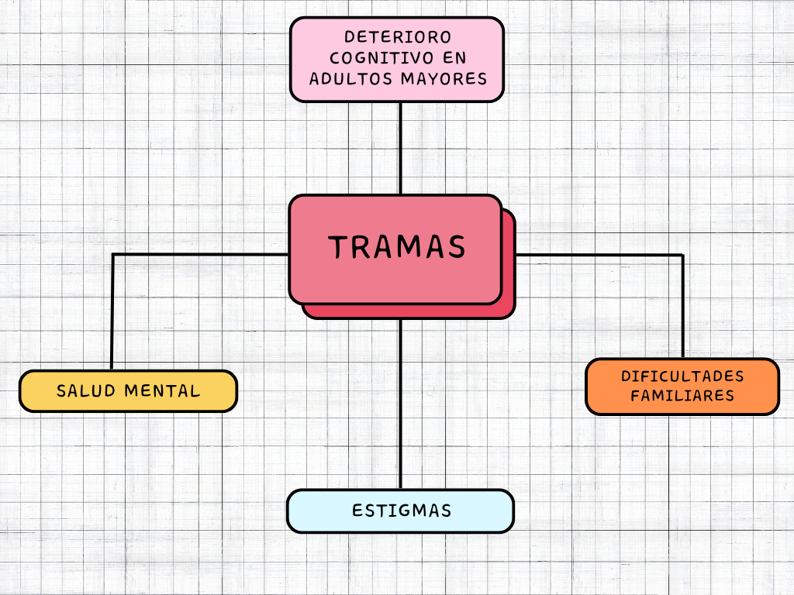
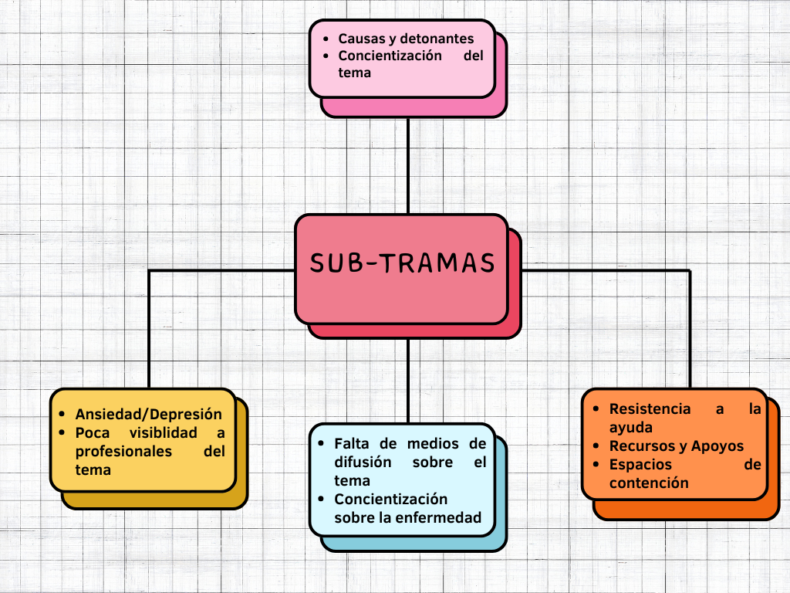
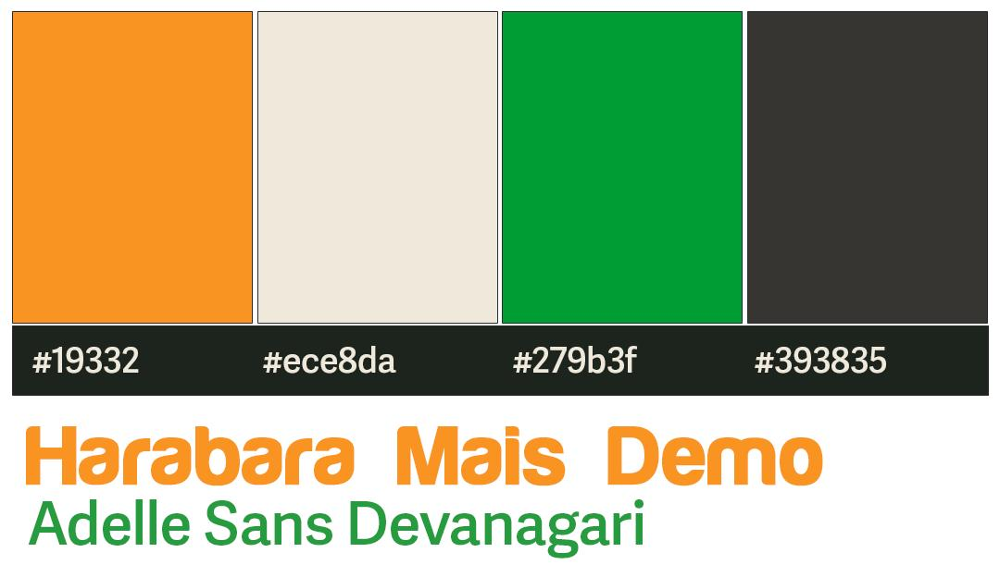
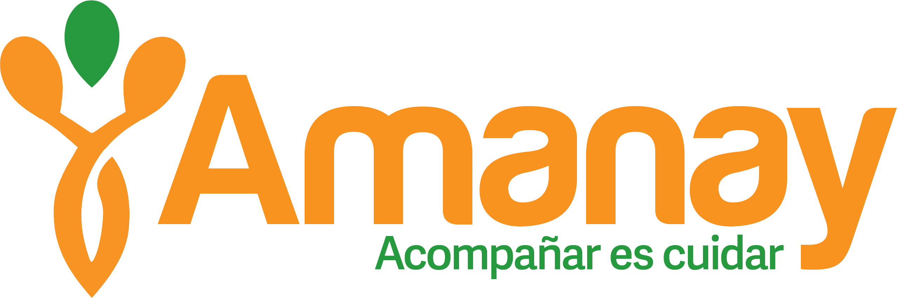

Creado para materia anual
Una narrativa transmedia es una estrategia de comunicación que se despliega a través de múltiples plataformas y formatos de medios, donde cada plataforma aporta una pieza única y valiosa a la historia general.
Este proyecto surge de una problemática social profunda: el deterioro cognitivo en adultos mayores. Esta iniciativa busca concientizar sobre la enfermedad, abordar estigmas y visibilizar la labor de los centros de día.


La identidad visual de Amanay transmite cercanía y profesionalismo. Combina un símbolo cálido con una paleta cromática natural.

El isotipo representa figuras humanas estilizadas que sugieren apoyo mutuo. El logotipo en tono naranja comunica energía y optimismo.

Introducción
Animación de Logo
Documentación completa del proyecto.